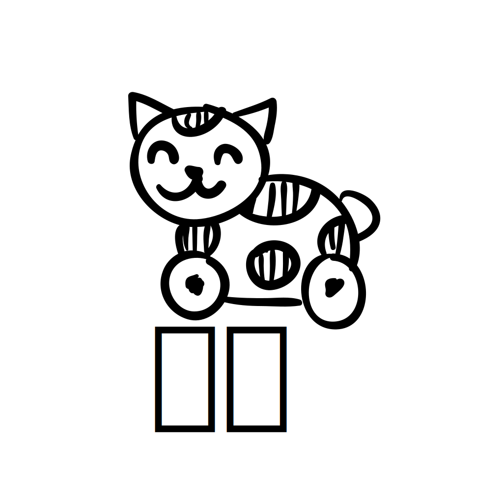
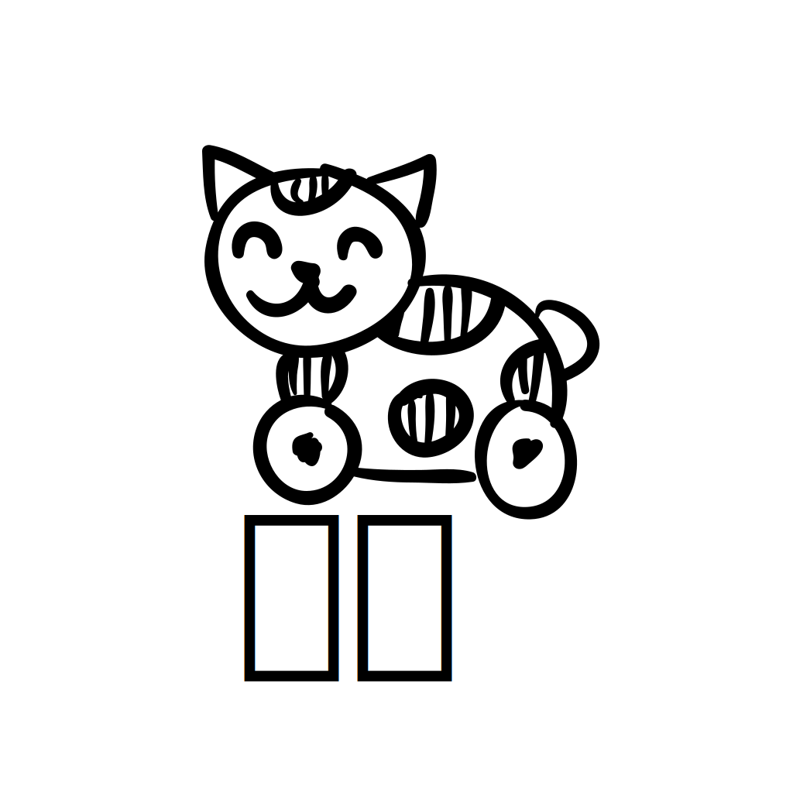

# fun way to improve your japanese :) [ play in your browser ]
## japanese
* about 3000 japanese kanji extracted from http://tangorin.com/common_kanji
* 5000 japanese sentences taken from http://www.edrdg.org/wiki/index.php/Tanaka_Corpus
## Dutch, German, Finnish, French, Italian, Spanish
* 5000 random sentences from from http://www.statmt.org/europarl/ (european parliament sessions)
## how to contribute
you can submit pull requests containing json dump of array of questions of the format:
[
{
"q": "some untranslated sentence",
"a": "translation",
"d": 1
}
]
q: is the question
a: is the answer
d: is the difficulty
for example:
[
{
"q": "こんにちは世界。",
"a": "Hello World",
"d": 1
}
]
you can also use https://neko.science/contribute/ to help you with the json
after you have your json file, fork the project going to https://github.com/jackdoe/neko,
place the json file in sentences/LANGUAGE/{beginner, intermediate, advanced} and push to your local fork,
then just open a pull request
 
